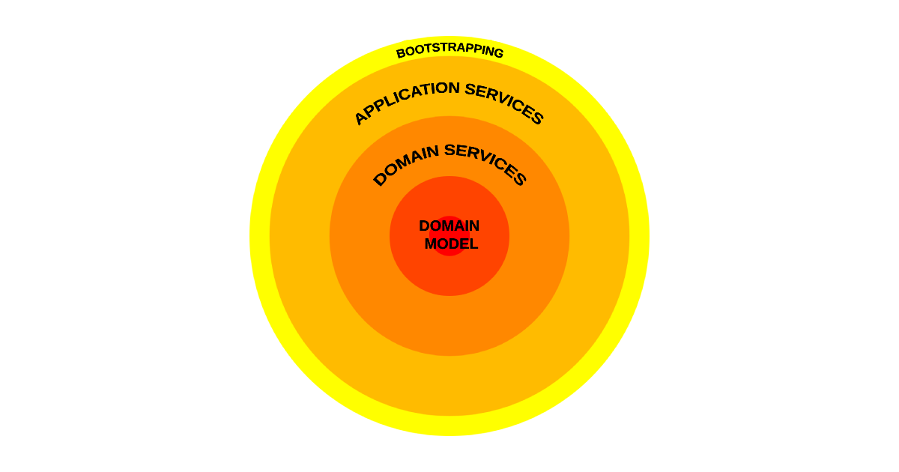

Designing application layers
In programming, we think a lot about separation of concerns. We want our code to do a lot of exciting things, but we need to be able to read and maintain it. In object-oriented programming, a common way to achieve this is to give each "object" one thing to control. This is commonly called the single-responsibility principle.
When a file/object in our code does one thing, it becomes much easier to read, to edit, and to unit test. With this in mind we need to figure out how to fit these objects together so we can see the system working from end to end. Welcome to systems design.
Making a car
Imagine you work on the production line of a car factory. You push the lit button in front of you. The light goes out and an empty chassis rolls up to the first machine. The first machine adds wheels to the frame and passes it to the second machine. The second machine adds the engine and passes it to the third machine. The third machine adds the body and sends the finished car to the end of the line, at which point the button lights up, letting you know you can press it again.
There are three things we can learn from this example:
- I clearly do not work in a car factory
- For an object inside a system to do something impactful, it usually needs input and output. The machines take the car as an input, adjust it somehow, and output the adjusted form.
- The order of the objects is consistent and must be preserved; we cannot add the wheels if we do not have the chassis first.
If the order of the objects is enforced as consistent, object 1 becomes a wrapper around object 2, stopping anything else from accessing it directly.
Having one consistent way in and out of a system is not unusual and is an excellent way to ensure system security. Consider the imaginary factory again. How did you arrive? Did you use the designated entrance? Did you pass through the metal detector? Did you scan your badge to enter the production floor? If we find alternative entrances that do not revolve around these checkpoints, what risks do we open ourselves up to?
Finally, consider the utility of each of these processes based on the end goal of building cars. If the factory suddenly started making trains instead, would the entrance and security checks remain the same? As important as all these protective outer layers are to the survival of the business, if you want to make anything unique happen, you must be in the middle.
The inner layers handle any final state of change. The outer layers enable the inner layers to do their jobs safely. The outer layers handle business logic, and the inner layers handle domain logic. While the inner layers cannot control the outer layers, they can optionally communicate a change in state. The final machine on the production floor is the only thing that truly knows whether it is okay for you to push your button again or not, so it must be able to communicate this.
Onion architecture
Jeffrey Palermo described these nested layers as onion architecture in 2008. This term is now used quite heavily in the industry, and one I have been asked to define several times in interviews. Researching online shows some variation in what makes up our onion and what those layers should be, but some aspects of it will always be true.
The onion represents the main application code. The external data stores, deployed infrastructure and third-party dependencies cannot be the ultimate decider of our application function. A layer of our application may consume some of these things, but they must do it in a way that is steadfast to change. This is achieved through interfaces and abstractions. If we changed our database engine from MySQL to SQLite tomorrow, then we should only need to change the code in one of our layers at most.
Our objects/layers should be easy to build. Patterns such as dependency injection should be used to make sure our interfaces point at the correct implementations. The outermost layer of most onion codebases is a bootstrapping layer, where no domain logic is stored and where the dependencies, config and interfaces are wired together.
Defining our layers
Let's push that button again and see where our layer separations lie.
We move deeper into the application whenever the system needs to ask a question about its readiness to complete the specified function.
- The first layer performs basic validation on the input to determine whether or not to process the request.
- The second layer prepares all of the machines with the necessary parts to make the car.
- The third and final layer lets each machine on the line do its job. This process could be broken down into its own layers if needed.
The outcome of the process is the released car. The output of the system provides this information to the user.
In reality each of these layers would also ask whether or not there was a system error and allow that to bubble back up to the outer layers to feed this information back to the user.
One thing I love about this pattern is the way it creates clear boundaries between testing types. An object or layer can be unit tested in total isolation. Layers can be built and combined downwards into integration tests. The entire system function can be tested end to end.
You can scale this model up and down indefinitely. How does your arrival to the factory fit into this? Could each machine on the line have its own diagram and layers? Absolutely. If we decided to add a second input to the system, validation could become its own layer.
Onions, layers and hexagons
There are many defined ways of architecting your software. Onion, layered and hexagonal architectures are all debated and compared often. There's a lot of cross-over between them, and I've been quite generous in using some key terms interchangeably in this article.
In both the onion and layered architecture patterns, the definition of a layer is the same. The main difference between the two architectures is that a layered architecture can be at risk of tight coupling between the layers, while the onion uses dependency inversion to ensure each layer is much more separated from its surroundings. This is similar to how hexagonal architecture allows each hexagon to exist and function independently, and the architecture focuses on how they slot together.
Understanding the difference is much easier when focusing solely on your code and not the dependencies, data stores and deployed infrastructure. Ultimately, being able to separate your desired outcome into specific processes, deciding whether each process is a business process or a domain process, and then finding a structured way to slot those processes together will make your code more testable and maintainable, and probably help you understand your desired outcome a bit better, too.